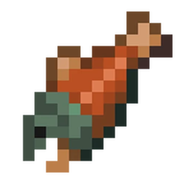

Grilled Midgard Serpent Recipe

Ingredients
- 1 Midgard Serpent Circling the Planet
- Ox Head
- Mjolnir
- Salt
- Pepper
- Olive Oil
- Immense Strength
Steps
- Secure the ox head to a strong fishing line to use as bait
- Go out to deep sea and hook the Midgard Serpent using the bait
- Pull the serpent to the surface using your gigantic muscles, avoid being bothered by its spitting poison
- Bang the serpent on the head with Mjolnir and drag it back to shore
- Behead and cut the serpent into sections and season with salt, pepper, and a light drizzle of olive oil
- Grill the serpent over medium heat for 8-10 minutes, turning occasionally until fully cooked and lightly charred
- Serve and enjoy!
The Story Behind The Meal